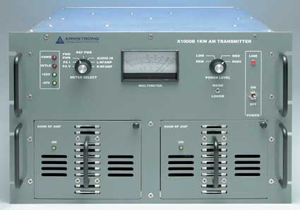

<div class="container">
    

    <div class="aboutus">
    <p>
        The Armstrong design team has done it again. This time creating a Low Power AM transmitter line that continues Armstrong's legacy and reputation for reliability and quality. The "X" series of AM Transmitters.
    </p>
    <p>
        These rugged and reliable transmitters are designed for low maintenance and high quality audio.
    </p>
    <p>
        Offered at 500 watts and 1KW these compact Solid State Transmitters are HD Radio ready. They feature Optimized multiphase modulation, 90% PA efficiency with 80% overall efficiency (AC in to RF out).
    </p>
    <p>
        Housed in a heavy duty aluminum chassis they easily fit into a 19" rack taking up only 7 rack spaces (12.25")and they feature hot pluggable 600 watt modules. The "X" series has three power level settings, that can be easily field set, to give you versatility for full power and pre sunrise/post sunset power adjustment. They are capable of 150% positive modulation and offer complete remote control capability via a rear mounted DB 25 connector.
    </p>
    <p>
        These compact, rock solid, performers offer the perfect solution for the replacement of the older style Solid State and tube AM transmitters.
    </p>
</div>
</div><!-- end container div -->